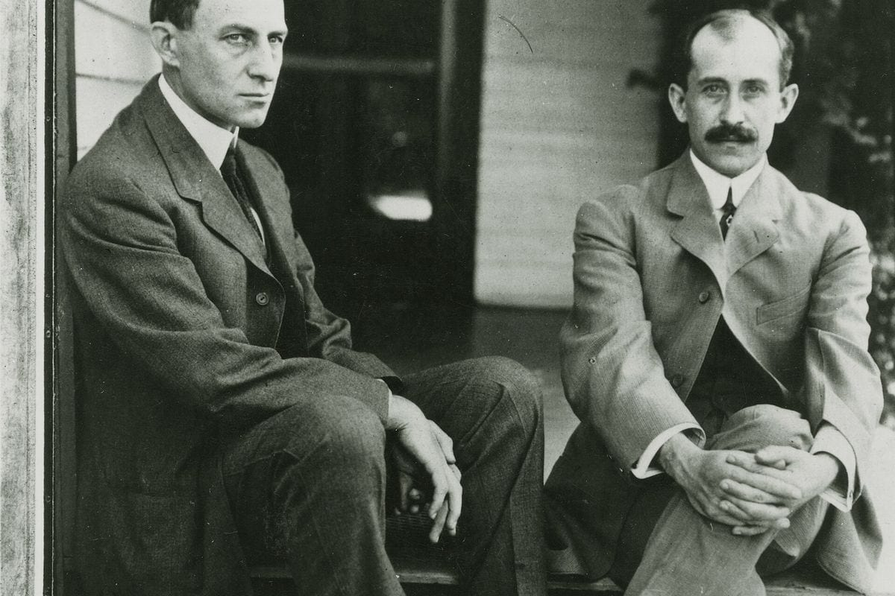

Почему 1+1=11
Мы привыкли думать, что сила — в самостоятельности. Сам сделал, сам добился, сам справился. Но есть вещи, которые невозможно сделать в одиночку — не потому, что не хватает навыков, а потому, что некоторые результаты рождаются только на стыке двух людей. Не сумма усилий, а нечто большее. То, что в бизнесе называют синергией, а в жизни — просто «вместе получилось то, чего по отдельности не было бы».
Я вижу это в практике. И знаю по себе: самые сильные изменения происходили именно тогда, когда рядом появлялся человек, с которым мы усиливали друг друга.
Исторический пример: братья Райт
Никто не верил, что они смогут. Авиация казалась делом одиночек-изобретателей — таких как Сэмюэл Лэнгли, получивший от правительства 50 тысяч долларов на создание летающей машины. Лэнгли строил сам. Он нанимал инженеров, закупал материалы, следовал плану. И потерпел крах.

А братья Райт — Уилбур и Орвилл — не имели ни государственного финансирования, ни диплома престижного университета. У них была велосипедная мастерская в Дейтоне, штат Огайо.
Они работали вместе годами: наблюдали за птицами, строили планеры, тестировали крылья в собственной аэродинамической трубе, которую смастерили из ящика и вентилятора. Уилбур был мыслителем — анализировал, формулировал гипотезы, вёл записи. Орвилл был практиком — строил, чинил, доводил до ума. Они спорили, ссорились, не соглашались. Но результат появлялся именно на стыке двух способов думать.
17 декабря 1903 года в Китти-Хок их самолёт поднялся в воздух. Первый полёт длился 12 секунд. Через несколько лет братья Райт получили патент на «летающую машину» и стали первыми, кто научил человечество летать.
Братья Райт вошли в историю. Не потому, что были талантливее. А потому, что их таланты усиливали друг друга.
Что говорит наука
Когда я изучала исследования для этой статьи, меня поразило, насколько буквально работает синергия на уровне мозга. Исследование, опубликованное в Social Cognitive and Affective Neuroscience, показало: когда люди работают вместе, их мозговая активность синхронизируется. Учёные записывали ЭЭГ 174 участников, разделив их на группы по четыре человека. Одни работали над задачами самостоятельно, другие — в команде. Результат: именно межмозговая синхронизация, а не субъективное ощущение командной работы, предсказывала коллективную эффективность. То есть мозг буквально «настраивается» на партнёра — и это даёт результат, которого не было бы в одиночку.
Российские психологи В. П. Позняков и Т. С. Вавакина провели исследование факторов эффективности делового партнёрства. Они опросили предпринимателей и выявили: доверие и ответственность — ключевые условия синергии. Препятствуют же ей манипулирование, скрытность, лицемерие. Иными словами, 1+1=11 работает только тогда, когда оба партнёра готовы быть честными и брать на себя обязательства.
Пример из моей практики
Партнёрство — одна из самых сложных и самых мощных тем в моей практике карьерного психолога. Сложных — потому что требует уязвимости: нужно признать, что я не всё могу сам. Мощных — потому что правильная конфигурация двух людей может дать то, чего каждый из них не достиг бы в одиночку за всю жизнь.
Один из показательных случаев: ко мне пришли два специалиста, каждый из которых в одиночку «буксовал» годами. Один был сильным аналитиком — он видел структуру, мог разложить любую сложную задачу на части. Второй был блестящим коммуникатором — умел говорить, вдохновлять, устанавливать контакты.
Они познакомились случайно. И это стало началом партнёрства, которое изменило обоих. Аналитик взял на себя стратегию и методологию, коммуникатор — клиентов и продвижение. Через год их совместный проект вырос в несколько раз. Через два — они открыли своё дело. Ни один из них не смог бы сделать это в одиночку. Не потому, что был слаб. А потому, что сила каждого раскрывалась именно рядом с другим.
Что делать, если вы хотите найти партнёра
Речь не о том, чтобы найти «вторую половинку» в бизнесе или творчестве. Речь о том, чтобы научиться видеть, где ваша сила может усиливаться чужой.
Честно ответить: где я силён, а где нет
Не «что я умею», а «что я делаю лучше всего — и что мне даётся тяжело». Партнёрство начинается не с поиска другого, а с понимания себя.
Искать не «такого же», а «дополняющего»
Самая мощная конфигурация — не два одинаковых специалиста, а два разных. Один видит лес, другой — деревья. Один чувствует людей, другой — системы. Синергия рождается на стыке различий, а не на их сглаживании.
Договориться о ценностях до начала
Доверие и ответственность — не то, что «появится само». Это то, о чём нужно говорить прямо: что для нас важно, как мы решаем конфликты, что делаем, когда не согласны.
Вывод
1+1=11 — это не математика. Это про то, что иногда два человека вместе могут создать нечто, чего не было бы ни в одном из них по отдельности.
Если вы сейчас чувствуете, что «буксуете» в одиночку, — возможно, дело не в недостатке усилий. Возможно, дело в том, что рядом нет того, с кем ваша сила удвоится. И это не слабость. Это точка роста.